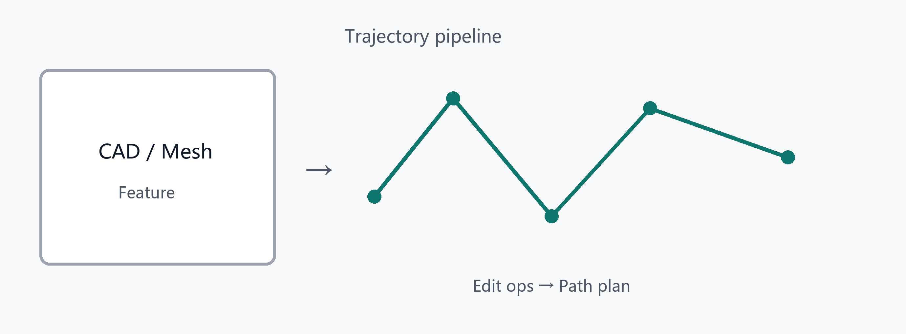

Trajectory generation pipeline
Trajectory generation & editing
- CAD feature trajectories and mesh/section/B-spline sessions
- Many edit operators; draft undo; template library
- Apply into path planning / programs; viewport overlays
- AI domain
trajectory.feature for assisted edge/weld workflows